Instalando o PostgreSQL
Instale a versão do PostgreSQL correspondente ao seu sistema:
Siga os passos de instalação (Next > Next > Next > ...)
Defina uma senha de acesso:
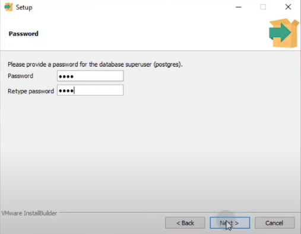Dê continuidade ao processo de instalação...
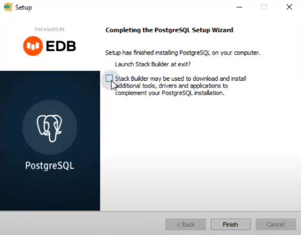Não vamos executar o Stack Builder, então desmarque a checkbox.
No PostgreSQL
Ao abrir o pgAdmin, insira a senha de acesso que criou anteriormente.
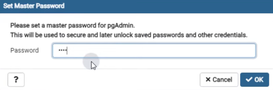Em seguida, crie seu primeiro banco de dados.
Crie uma tabela chamada "Livro".
Criaremos as seguintes colunas:
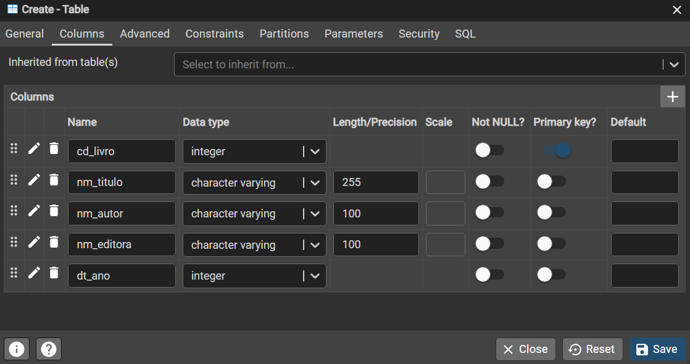No Visual Studio
Para este projeto, baixe o código fornecido abaixo e use-o como base fazendo as alterações necessárias:
Descompacte o arquivo Base_CRUD.rar e abra o arquivo ParaCasa1.sln localizado dentro da pasta CRUD Completo.
Instalando o Npgsql
Para fazermos a integração do PostgreSQL com o Visual Studio, utilizaremos o provedor de acesso a dados Npgsql.
A instalação é feita da seguinte forma:
Imports e Namespaces
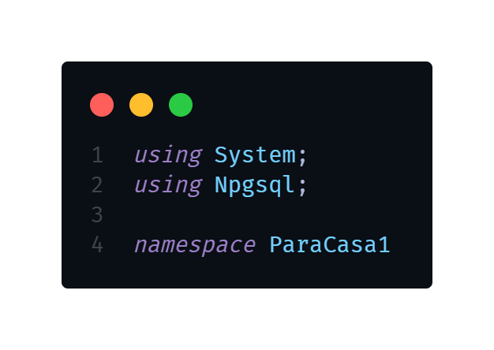using System:Isso importa o namespaceSystem, padrão do Visual Studio.using Npgsql:Isso importa o namespaceNpgsql, que é necessário para trabalhar com o PostgreSQL em C#.namespace ParaCasa1:Define um namespace para o código. Namespaces são usados para organizar o código e processos.
Note que no código base, "Using Npgsql" precisa ser inserido manualmente.
Declaração de Variáveis
Atenção: Todo o código ficará dentro da classe "LivroDAL".
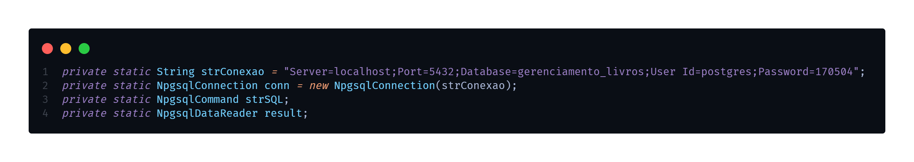- strConexao: String que define a conexão com o banco de dados PostgreSQL. Contém informações como o servidor, porta, nome do banco de dados, usuário e senha.
Essas informações podem ser encontradas da seguinte forma:
- conn: Objeto NpgsqlConnection que representa a conexão com o banco de dados.
- strSQL: Objeto NpgsqlCommand para executar comandos SQL no banco de dados.
- result: Objeto NpgsqlDataReader para armazenar os resultados de consultas SQL.
Métodos
conecta()
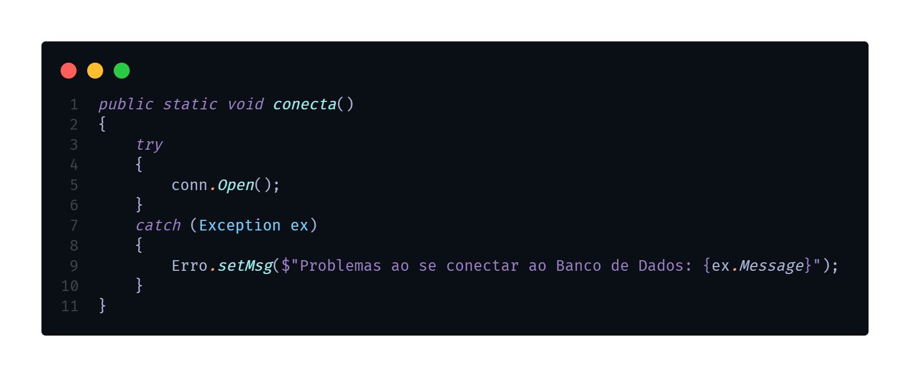- Este método é responsável por abrir a conexão com o banco de dados. Ele utiliza um bloco
try-catchpara capturar exceções que possam ocorrer durante a tentativa de abertura da conexão. - Se a conexão for bem-sucedida, o método
Open()do objetoNpgsqlConnectioné chamado para abrir a conexão. - Se ocorrer algum erro durante a conexão, uma mensagem de erro é definida usando a classe
Erroque é referenciada aqui para lidar com erros de forma centralizada.
desconecta()
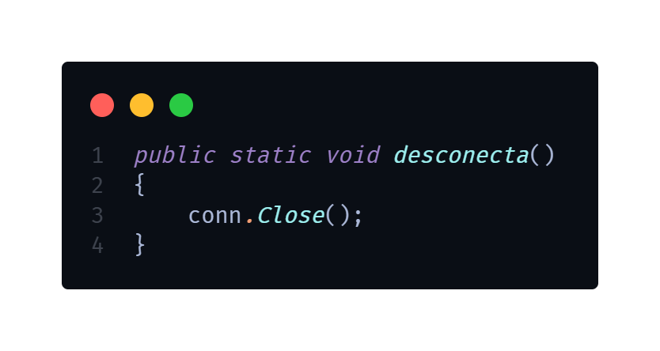- Este método é responsável por fechar a conexão com o banco de dados. Ele simplesmente chama o método Close() do objeto NpgsqlConnection para fechar a conexão aberta anteriormente.
Note que abriremos e fecharemos a conexão com o banco de dados dentro de cada método.
inseriUmLivro(Livro umlivro)
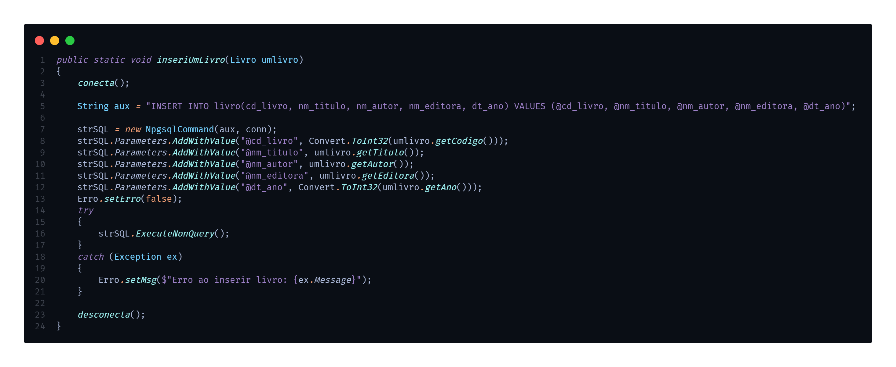- Este método insere um novo livro no banco de dados. Primeiro, ele chama o método
conecta()para abrir a conexão com o banco de dados. - Em seguida, ele constrói uma string SQL de inserção com parâmetros usando o comando
INSERT INTO. - Depois, ele cria um objeto
NpgsqlCommandcom a string SQL e adiciona parâmetros para cada valor do livro usando o métodoAddWithValue(). - Então, ele executa o comando SQL usando o método
ExecuteNonQuery()do objetoNpgsqlCommandpara inserir o livro no banco de dados. - Se ocorrer algum erro durante a inserção, ele é capturado pelo bloco
try-catch, e uma mensagem de erro é definida usando a classeErro. - Por fim, o método
desconecta()é chamado para fechar a conexão com o banco de dados.
excluiUmLivro(Livro umlivro)
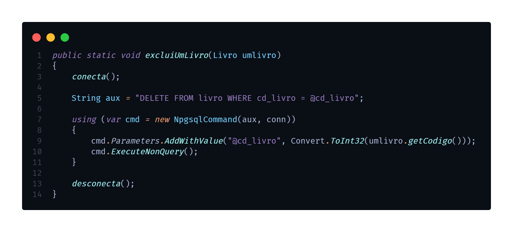- Este método exclui um livro do banco de dados com base no código do livro fornecido. Ele segue uma abordagem semelhante ao método de inserção, mas usa uma instrução `DELETE` para remover o livro do banco de dados.
atualizaUmLivro(Livro umlivro)
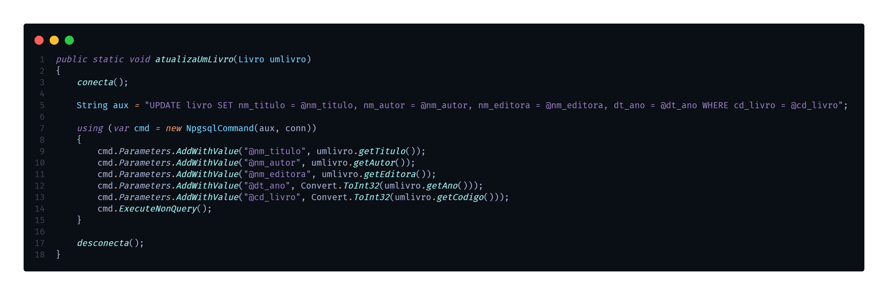- Este método atualiza as informações de um livro no banco de dados. Ele utiliza uma instrução `UPDATE` para modificar as informações do livro com base no código do livro fornecido.
consultaUmLivro(Livro umlivro)
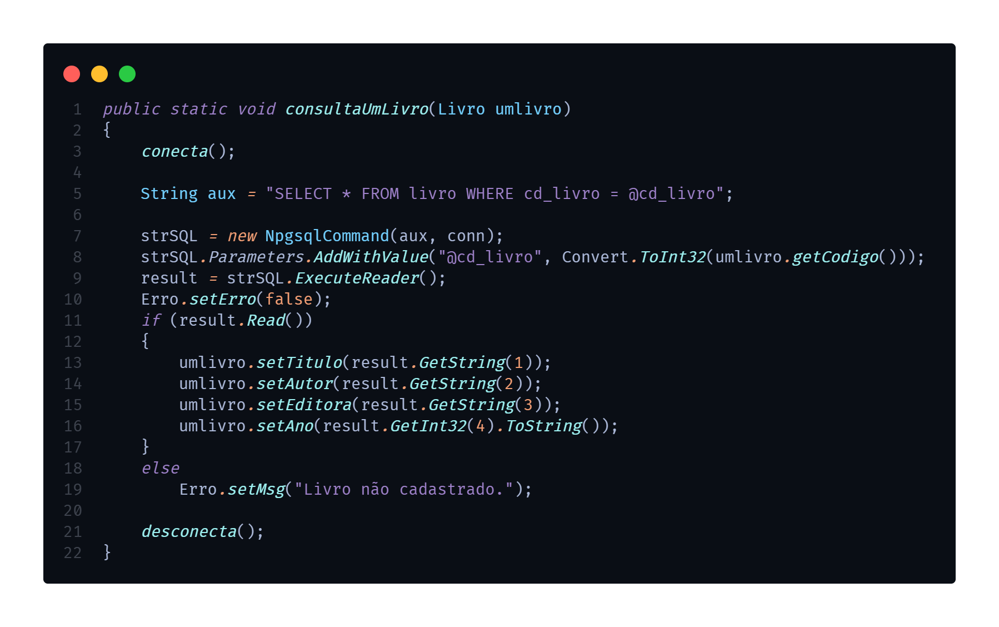- Este método consulta as informações de um livro no banco de dados com base no código do livro fornecido. Ele utiliza uma instrução
SELECTpara buscar o livro no banco de dados. - O resultado da consulta é armazenado em um objeto
NpgsqlDataReader. - Se o livro for encontrado, as informações são lidas do objeto
NpgsqlDataReadere definidas no objetoLivrofornecido. - Se o livro não for encontrado, uma mensagem de erro é definida usando a classe
Erro. - Por fim, o método
desconecta()é chamado para fechar a conexão com o banco de dados.
Testando o código
Vídeo de teste: